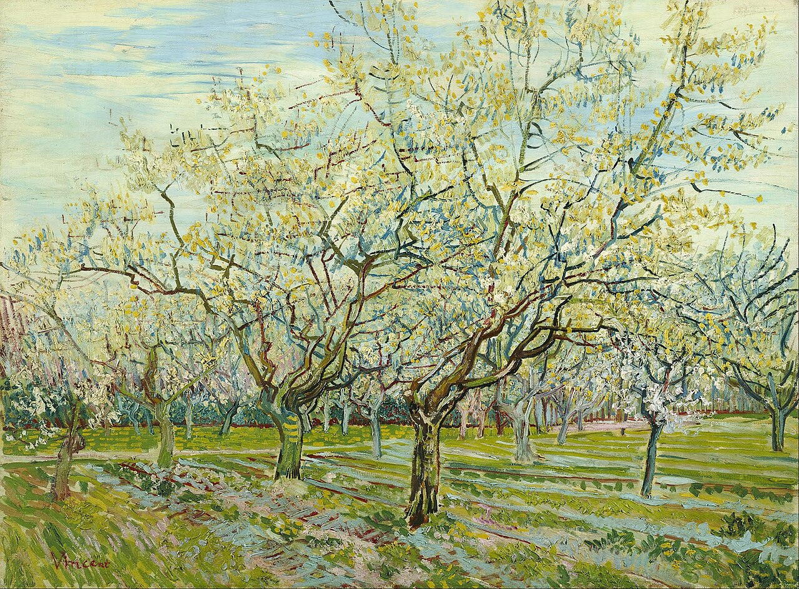
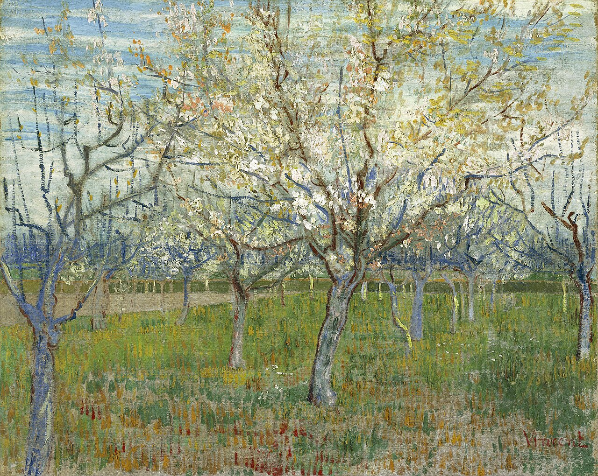

|
Transl. Christian Souchon 01.01.2005 (c) (r) All rights reserved |
Notes de 2005:
|
Notes de 2005:
|
|
Remarques ajoutées en 2026 C'est l'année où l'Intelligence artificielle (IA) devient accessible à tout un chacun. Sera-t-elle de taille à débusquer toutes les références que Michel tirait de sa boulimie de lectures et de sa gigantesque bibliothèque? Ci-après ChatGPT propose son interprétation du "Songe du Verger". Elle se présente sous forme d'une paraphrase, strophe après strophe, un genre où le protestantisme anglo-saxon excelle. En l'occurrence l'essentiel est dit: le merveilleux Verger est plein de sourdes menaces -la fleur des jardins y cottoie l'arbre des cimetières -, de fleurs promises à la décapitation. Certains détails échappent visiblement à cette machine. Il n'est pas d'usage de parler de l'aube d'un jour nouveau sur le ton plaintif et accusateur qu'adopte ce poème. Certains qualificatifs utilisés par l'IA sont, de ce fait, un peu trop valorisants: "matinée ou aube parfaite", "monde rendu à l'innocence"... L'étonnant premier vers parle de "conciliation" entre les arbres des cimetières et ceux des jardins. La langue anglaise n'a qu'un seul mot (to reconcile) pour "concilier" (accord provisoire) et "réconcilier"(accord définitif). Le commentaire de l'IA qui inclut ce mot dans une liste ou figure l'expression "sans retour possible" suggère qu'elle retient, à tort, le second sens de "reconcile". Si l'IA omet de signaler que la strophe 4 évoque de façon détournée l'abominable "verger du roi Louis" de François Villon, il ne lui a pas échappé que le ciel au-dessus du verger rappelle de célèbres tableaux d'un autre visionnaire, Vincent Van Gogh. L'IA ne pouvait pas reconnaître l'énigmatique jeune fille rencontrée jadis au Parc de Saint-Cloud qui accompagne le poète dans cet angoissant paysage, mais elle a souligné le mot essentiel: ce couple bizarre est "ETRANGER" à la fête de l'aube naissante. Elle aurait pu mettre en exergue un autre maître-mot de l'univers galianien où la solitude est omni-présente: le mot "SEULS" à l'avant-dernier vers... « Ce poème est l’une des œuvres les plus subtiles de Galiana, car il met en scène une matinée parfaite dont la beauté est peu à peu envahie par un malaise métaphysique. Le verger est radieux, mais l’âme est de pierre. Le sens du poème réside précisément dans cette contradiction. 1. L’aube comme réconciliation et harmonie cosmique (strophes 1-2) Le poème s’ouvre sur la vision d’une aube parfaite : cyprès et roses réconciliés des dieux « réinventant le jour » le chaos apaisé un chemin ouvert « sans retour possible » C’est l’image d’une harmonie primordiale, d’un monde rendu à l’innocence. Le verger apparaît comme un paradis nouveau, fraîchement créé. Chaque fleur rayonne d’« une clarté plus sage ». Les pins et les nards resplendissent. Symboliquement, c’est le monde idéal, le monde tel qu’il devrait être. Mais le poème introduit immédiatement une fêlure. 2. L’âme est de pierre : l’humain ne peut répondre à la beauté (strophe 3) Malgré la sérénité : « Notre âme était de pierre. » L’âme est bloquée, inerte, insensible ; les mots éveillent des « échos obscurs », ce qui signifie que la parole ne communique plus ; la conscience est troublée : quelque chose en soi est en désaccord avec le monde. C’est le premier signe d’une dissonance intérieure. 3. Aucun présage ne trouble le ciel — pourtant l’effroi persiste (strophe 4) Galiana insiste : rien ne cloche, pas de corbeaux, pas d’ombres, pas de signes funestes, ni croix ni tombeaux sous le soleil. Le ciel est parfaitement paisible. Pourtant, les locuteurs ressentent de l’effroi. C’est un point crucial : la peur ne vient pas du monde ; elle vient de l’intérieur. 4. La peur des étoiles mortes : angoisse cosmique sous la beauté (strophe 5) La nuit est « lourde », les étoiles tissent une voûte « obscurcie par le soleil ». Leurs rayons dérivent tels de fins voiles. Puis, le vers clé : « La peur des astres morts couvait sous l’or du miel. » Astre mort = extinction cosmique ; mémoire de la nuit ; conscience de la mortalité ; savoir que la beauté est éphémère. Le rêve du verger est hanté par la fragilité cosmique. 5. Les herbes et les iris : une vie inconsciente de son destin (strophe 6) Les ombres se saluent sous les herbes. Les iris voguent tels des bateaux sur une mer invisible. Mais ils ignorent le sort qui les attend : « D’abandonner le soir leurs têtes sous les fers. » Au crépuscule, ils inclineront la tête sous les « fers » — la faux, la nuit, la fin inéluctable. La nature est belle parce qu’elle ignore sa perte. Les humains, eux, ne l’ignorent pas. 6. Les grillons : messagers de la nuit et d’un malaise métaphysique (strophe 7) Les grillons crépitent « incessamment, assidûment », cernant le silence. Leur plainte « ensorcelle », et leur stridence « dépasse la nuit ». Ils sont : les premiers signes de l’aube ; les premiers signes d’anxiété; les premiers signes de la reprise des activités humaines. Ils ouvrent la nuit « comme un sillon », perçant le jour. Les grillons font entendre le son de l’effroi sous la beauté. 7. Révélation finale : deux êtres qui marchent, étrangers à la fête (strophe 8) La dernière strophe révèle le cœur émotionnel du poème : « Et seuls nous avançons, étrangers à la fête, Moi pareil au sommeil et toi comme sa sœur. » Les deux marcheurs — « je » et « toi » — traversent le verger comme des étrangers. Ils ne participent pas à la fête de la lumière. Ils ressemblent au sommeil et à sa sœur — deux êtres à demi vivants, à demi absents, incapables de se joindre à l’éclat du monde. Voici le sens du poème : Le monde est beau, mais l’âme ne peut y pénétrer. Le verger est un rêve, mais le rêve est inaccessible. La lumière du jour brille, mais la nuit intérieure persiste. En bref, Le Songe du Verger décrit un matin d'harmonie parfaite, un paradis renaissant. Pourtant, l'âme humaine demeure de pierre, hantée par le souvenir de la nuit, la crainte des étoiles mortes et l'inéluctabilité du déclin. C'est un poème sur la disjonction entre beauté extérieure et ténèbres intérieures, sur l'impossibilité de participer à l'éclat du monde, et sur la sourde angoisse qui accompagne même l'aube la plus parfaite. |
Remarks added in 2026 This is the year Artificial Intelligence (AI) becomes accessible to everyone. Will it be up to the task of unearthing all the references Michel drew from his voracious reading habits and his massive library? Below, ChatGPT offers its interpretation of "Le Songe du Verger" (The Dream of the Orchard). It takes the form of a stanza-by-stanza paraphrase —a genre in which Anglo-Saxon Protestantism excels. In this instance, the essence is captured: the wondrous orchard is rife with subtle threats, —the garden flower grows there alongside the cemetery tree—, - with flowers destined for beheading. Certain details clearly elude this machine. It is not customary to speak of the dawn of a new day in the plaintive, accusatory tone adopted by this poem. Consequently, some of the descriptors used by the AI are somewhat overly laudatory: "perfect morning or dawn," "world restored to innocence"... The striking opening line speaks of a "conciliation" between cemetery trees and garden trees. English has only one word —"to reconcile"— to cover both *concilier* (a provisional agreement) and *réconcilier* (a definitive one). The AI’s commentary, which includes this word in a list alongside the phrase "with no possibility of return," suggests that it is —erroneously— opting for the latter meaning. If the IA failed to note that stanza 4 alludes obliquely to François Villon’s abominable "King Louis’s orchard", it did not escape it that the sky above the orchard calls to mind famous paintings by another visionary, Vincent Van Gogh. The AI could not recognize the enigmatic young woman — met long ago in the Parc de Saint-Cloud— who accompanies the poet through this unsettling landscape, yet it highlighted the crucial word: this strange pair is "ALIEN" to the celebration of the dawning day. It might have highlighted another key word in Galiana’s universe every inch of which solitude pervades: the word "ALONE" in the penultimate line... "This poem is one of Galiana’s most subtle pieces, because it stages a perfect morning whose beauty is slowly invaded by a metaphysical unease. The orchard is radiant, but the soul is stone. The poem’s meaning lies precisely in that contradiction. 1. Dawn as reconciliation and cosmic harmony (stanzas 1–2) The poem opens with a vision of perfect dawn: cypresses and roses reconciled gods “reinventing the day” chaos soothed a path opened “that has no return” This is the image of primordial harmony, a world restored to innocence. The orchard appears like a new paradise, freshly created. Every flower shines with “a wiser brightness.” The pines and nards radiate. Symbolically, this is the ideal world, the world as it should be. But the poem immediately introduces a crack. 2. The soul is stone: the human cannot respond to beauty (stanza 3) Despite the serenity: “Notre âme était de pierre.” The soul is blocked, inert, unresponsive; Words awaken “obscure echoes,” meaning: speech no longer communicates; consciousness is troubled: something in the self is out of tune with the world. This is the first sign of inner dissonance. 3. No omen disturbs the sky — yet dread persists (stanza 4) Galiana insists: nothing is wrong, no crows, no shadows, no fatal signs, no crosses or tombs in the sun The sky is perfectly peaceful. Yet the speakers feel dread. This is crucial: the fear does not come from the world; it comes from within. 4. The fear of dead stars: cosmic anxiety beneath beauty (stanza 5) The night is “heavy,” the stars weave a canopy “obscured by the sun.” Their rays drift like thin veils. Then the key line: "Under the honey‑gold of daylight, the fear of dead stars broods." Dead stars =cosmic extinction; the memory of night; the awareness of mortality; the knowledge that beauty is temporary. The orchard’s dream is haunted by cosmic fragility. 5. The grasses and irises: life unaware of its fate (stanza 6) Shadows hail each other under the grasses. Irises sail like boats on an invisible sea. But they do not know the fate that awaits them: “D’abandonner le soir leurs têtes sous les fers.” At dusk, they will bow their heads under the “irons” — the scythe, the night, the inevitable end. Nature is beautiful because it is unaware of its doom. Humans are not. 6. The crickets: heralds of night and metaphysical unease (stanza 7) Crickets crackle “incessant, assiduous,” hemming the silence. Their plaint “bewitches,” and their sharpness “outstrips the night.” They are: the first signs of dawn; the first signs of anxiety; the first signs of the return of business. They open the night “like a furrow,” cutting into the day. Crickets = the sound of dread beneath beauty. 7. Final revelation: two beings walking, estranged from the feast (stanza 8) The last stanza reveals the poem’s emotional core: “Et seuls nous avancions, étrangers à la fête, Moi pareil au sommeil et toi comme sa sœur.” The two walkers — “I” and “you” — move through the orchard as strangers. They are not part of the feast of light. They resemble sleep and its sister — two beings half‑alive, half‑absent, unable to join the world’s radiance. This is the poem’s meaning: The world is beautiful, but the soul cannot enter it. The orchard is a dream, but the dream is inaccessible. Daylight shines, but inner night persists. In short Le Songe du Verger describes a morning of perfect harmony, a paradise reborn — yet the human soul remains stone, haunted by the memory of night, the fear of dead stars, and the inevitability of decline. It is a poem about the disjunction between outer beauty and inner darkness, about the inability to participate in the world’s radiance, and about the quiet dread that accompanies even the most perfect dawn. |
|
 Le Verger blanc |
 La nuit étoilée |
 Le verger fleuri |
|
Q. Un lien entre cette œuvre et un tableau célèbre de Van Gogh est-il possible ?
R. Oui, ce lien est non seulement possible, mais aussi symboliquement fécond ; il éclaire l’architecture émotionnelle du poème. Le verger du sonnet de Galiana n’est pas simplement un espace pastoral ; c’est un monde rayonnant dont la beauté est assombrie par une angoisse métaphysique. Cette tension — entre une nature lumineuse et une obscurité intérieure — est précisément ce qui anime plusieurs des œuvres les plus célèbres de Van Gogh. Le poème est, par essence, un paysage de Van Gogh traduit dans un langage métaphysique. |
Q. Is a connection of this piece to a famous picture by Van Gogh possible?
R. Yes, a connection is not only possible, it is symbolically fertile, and it clarifies the poem’s emotional architecture. The orchard in Galiana’s sonnet is not simply a pastoral space; it is a radiant world whose beauty is shadowed by metaphysical dread. This tension — between luminous nature and inner darkness — is precisely what animates several of Van Gogh’s most famous works. The poem is, in essence, a Van Gogh landscape translated into metaphysical language. |
Listen to 'Dream in the Orchard' in English